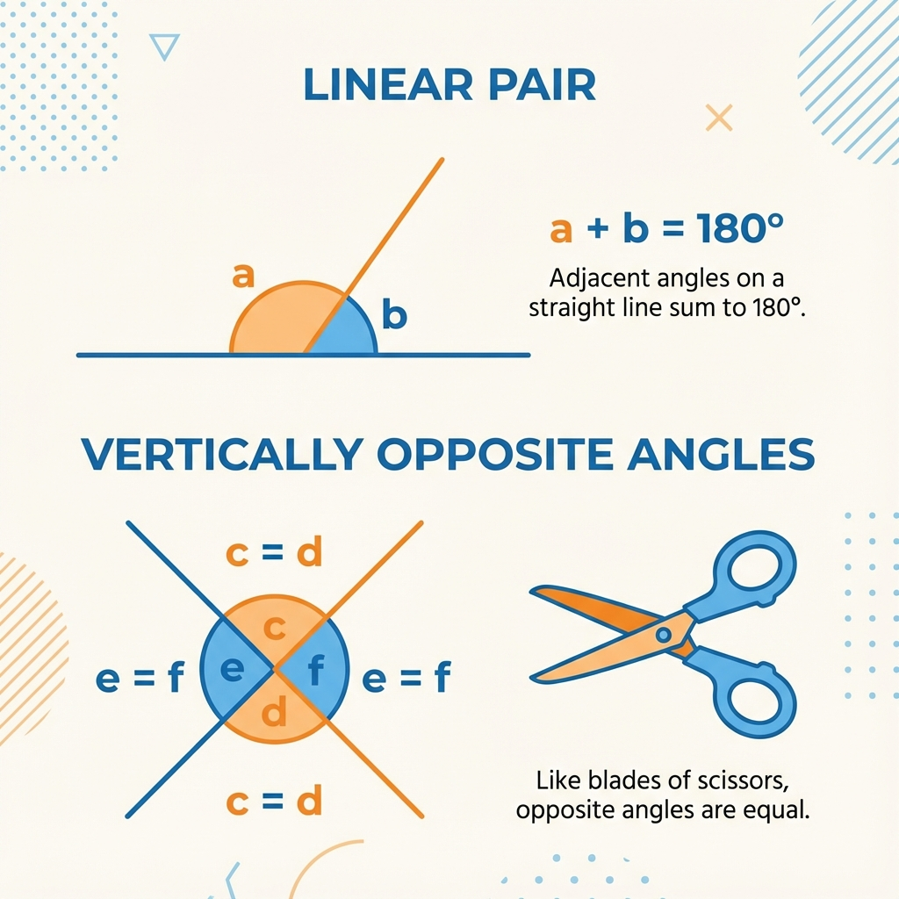

1. Linear Pair Axiom (Seedhi Line ka Jadoo)
Sabse basic rule: Ek straight line hamesha 180° banati hai.
Agar hum ek straight line par ek danda (ray) khada kar dein, toh wo line 2 angles mein divide ho jayegi. In dono angles ka sum hamesha 180° hoga.
Socho ek pura gol pizza (360°) hai. Agar hum ise aadha kaat dein, toh hume ek semi-circle (D-shape) milta hai jo 180° ka hota hai.
Ye semi-circle ek straight line jaisa hai. Ab agar tum isme se ek slice (angle 1) kaat lo, toh bacha hua hissa (angle 2) wahi hoga jo bacha hai.
Matlab: Slice + Bacha hua hissa = Pura 180° Pizza.
(Angle 1 + Angle 2 = 180°)
If a ray stands on a line, then the sum of two adjacent angles so formed is 180°.
2. Vertically Opposite Angles (The 'X' Rule)
Jab do lines aapas mein 'X' banate hue cut karti hain, toh aamne-saamne wale angles (Opposite Angles) equal hote hain.
Ek kainchi (scissors) ko imagine karo. Jab tum kainchi ke handles (pakadne wala hissa) kholte ho, toh aage ke blades bhi utne hi khulte hain.
Jitna angle handles ke beech banega, utna hi angle blades ke beech banega. Ye kabhi alag nahi ho sakte!
Theorem: If two lines intersect each other, then the vertically opposite angles are equal.
Proof (Saboot):
Maan lo do lines AB aur CD point O par cut kar rahi hain.
- Line AB par dhyan do: Angle AOC + Angle BOC = 180° (Linear Pair) ... (Equation 1)
- Line CD par dhyan do: Angle BOC + Angle BOD = 180° (Linear Pair) ... (Equation 2)
- Dono equations 180° ke barabar hain, toh hum unhe compare kar sakte hain:
Angle AOC + Angle BOC = Angle BOC + Angle BOD
BOC dono taraf se kat gaya. Bacha kya?
Angle AOC = Angle BOD
Yehi hume prove karna tha! 🎉
📊 Visual Summary: Angles

3. Parallel Lines Property
Parallel lines wo hoti hain jo kabhi nahi milti (jaise railway track). Ek interesting rule hai:
"Jo lines kisi same line ke parallel hoti hain, wo aapas mein bhi parallel hoti hain."
Ek building imagine karo.
- Floor 2, Floor 1 ke parallel hai.
- Floor 3 bhi Floor 1 ke parallel hai.
Toh common sense hai ki Floor 2 aur Floor 3 bhi aapas mein parallel honge. Wo kabhi ek dusre ko touch nahi karenge.
If Line l || Line m, and Line n || Line m.
Then, Line l || Line n.
📌 Aage Ka Content (Next Chapter)
Humne lines aur angles ko samajh liya. Ab hum in lines ko jod kar shapes banayenge. Sabse pehla shape: Triangles.